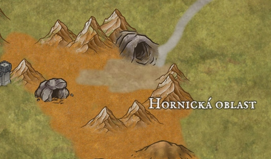

Hornická oblast - doly
Garagor je velmi industriální a potřebuje odněkud brát své železo a jiné suroviny. V hornické oblasti existuje několik městeček, kde se sdružují horníci a jejich rodiny a obchodní společnosti, které zásobují Garagor, Morgstadt, Denthir a další města svým dovozem.
Na jih od hornické oblasti je dlouhá nehostinná pustina, což je pomyslná hranice mezi Garagorem a Tarkirem, vzdálenou jižní zemí, kde prý sídlí dračí národ.
Dobrodružství, která se zde odehrála:

Hornická oblast na mapě